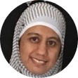

| I am working as a Senior Data Scientist & Group Leader at the University of Bonn. I am associated with Smart Data Analytics since 2016 |  |
| Project [Role] | Abstract | Date |
|---|---|---|
| Big Data Europe [Technical Leader] |
2015-2018 | |
| Big Data Ocean [Technical Leader] |
2016-2019 | |
| Open Budgets [ML expert] |
||
| LAMBDA [Academic expert] |
LAMBDA defines a scientific strategy for stepping up and stimulating scientific excellence and innovation capacity, increasing research capacities and unlocking the research potential of the biggest and the oldest R&D Institute in the ICT area in the whole West Balkan region, turning the Institute Mihajlo Pupin into a regional point of reference when it comes to multidisciplinary ICT competence related to Big Data analytics. | 2018-2020 |
| Gradana [Academic Expert] |
2017-2019 | |
| Better [ML Consultant] |
BETTER is implementing a Big Data intermediate service layer focused on creating user-centric services and tools, while addressing the full data lifecycle associated with EO data, to bring more downstream users to the EO market and maximise exploitation of Copernicus data and information services. | |
| SLIPO [ML Consultant] |
SLIPO develops software, models and processes for: transforming conventional POI formats and schemas into RDF data; interlinking POI entities from different datasets; enriching POI entities with additional metadata, including temporal, thematic and semantic properties; fusing Linked POI data in order to produce more complete and accurate POI profiles; assessing the quality of the integrated POI data; offering value added services based on spatial aggregation, association extraction and spatiotemporal prediction. | |
| Cleopatra [Academic Expert] |
2019-2022 | |
| Bio2Vec [Co PI] |
2017-2020 | |
| PLATOON [Co PI] |
2020-2022 |
| 2016-Present, Data Scientist and Research Group Leader | University of Bonn |
|---|---|
| Key research areas Data Science, Parallel and Distributed Analytics, Knowledge Graphs, Data Mining, Machine Learning, Graph Embeddings, Artificial Intelligence, Semantic Web and related areas Projects and Management Technical WP Lead in H2020 Big Data Ocean, Co-PI and Team member of HSP project Smoothed analysis of Machine Learning Algorithms Lecturing and tutoring in Gradana, Lambda, Cleopetra HSP for Distributed Big Data Analytics Worked as a technical lead at Horizon 2020 funded project Big Data Europe, on the creation of “Big Data Integrator Platform”. Machine Learning Provision of technical expertise in projects and use cases for Big Data Ocean, Better, SLIPO, SPECIAL, OpenBudget, Bio2Vec and Blockchain analytics support for Alethio. Supervision of PhD theses 1. Scalable Distributed Terminological Decision Trees for RDF, Heba Allah, University of Bonn. 2. Distributed Knowledge Fusion in Knowledge Graphs, Shemaa Khalid 3. Multilingual and Heterogenous Fiscal Data Integration, Fathoni Musyafa 4. Scalable processing over large knowledge Graphs, Gezim Sejdiu Teaching 1. Distributed Big Data Analysis 2. Knowledge Graph Analysis |
|
| 2015-2016, PostDoctoral Researcher | Leipzig University |
| Worked as the work package lead at Horizon 2020 funded project Big Data Europe in development of a multi-purpose, open-source and scalable platform that is easy to use by communities. Research in Description Logics, Structured Machine Learning and Semantic Web using Big Data tools like Spark, Flink, Dockers etc. |
|
| 2014-2015, Assistant Lecturer | IT University of Copenhagen |
| Shared the teaching responsibilities of the assigned courses to prepare and carry seminars, and go through the exercises. I have participated in following courses : 1. Software Architecture, 2. Data Mining. I remained active member of 'GameAI' and 'Real' research groups and worked with Monte Carlo Tree Search Algorithms, Procedural Game development and Evolutionary Algorithms for Games and Arts. | |
| 2013-2014, Software Engineer | TEO Intl A/S, Copenhagen |
| Worked in a team-project for accelerated global team building solution. | |
| 2012-2013, Head of the Department | IQRA University |
| The department of ‘Computing and Technology’ has more than 20 employees and about 2000 students. I have efficiently delivered and managed multitude of disciplines in my tenure as the Head of the Department. | |
| 2009-2013 , Assistant Professor | IQRA University |
| I have taught a variety of subjects at the Undergraduate, Graduate and PhD level. The peer review and student assessment of my courses have always been outstanding. | |
{kind=link}